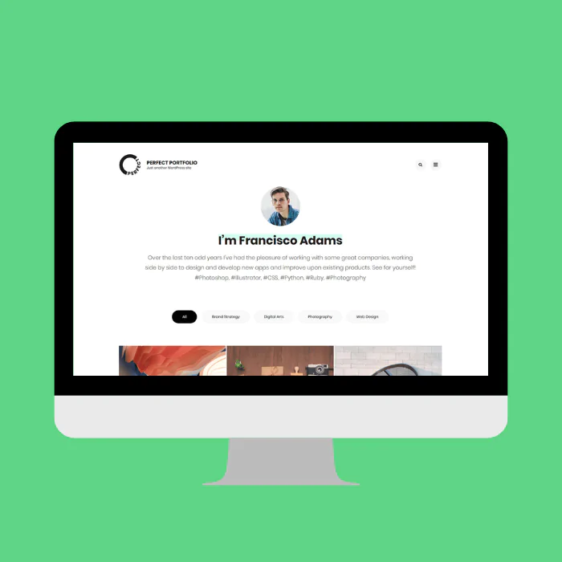

Mes projets

Se sensibiliser à l'hygiène informatique et à la cybersécurité
Projet BUT1Recherche et présentation sur les techniques d'attaques en cybersécurité
Contexte : Projet académique (SAÉ - Situation d'Apprentissage et d'Évaluation)
Objectif :
L'objectif était de s'informer pour notre groupe sur les différentes techniques d'attaques existantes dans le domaine de la cybersécurité.
Travail réalisé :
Avec un camarade, nous avons cherché des informations sur les différentes méthodes d'attaques à l'aide du site de l'ANSSI, puis nous avons réalisé une présentation et un document récapitulatif.
Résultat :
Ce projet m'a permis de mieux comprendre les enjeux de la cybersécurité et de me sensibiliser aux bonnes pratiques en matière d'hygiène informatique grâce aux présentations des autres groupes qui réalisaient aussi ce projet.
Résolution d'énigmes sur CodinGame
Projet personnelDéveloppement et énigmes mathématiques/logiques
Contexte : Projet personnel
J'ai pu réaliser différents exercices de développement et énigmes mathématiques/logiques sur le site CodinGame.
Objectif :
L'objectif était de résoudre des problèmes algorithmiques comme le Ghostleg. Ce type d'exercice permet de développer la logique de programmation et la résolution de problèmes complexes.
En savoir plus :
À voir sur mon précédent site, catégorie CodinGame.

Création d'un portfolio
Projet BUT1Réalisation d'un site web professionnel
Contexte : Projet académique (SAÉ - Situation d'Apprentissage et d'Évaluation)
Objectif :
L'objectif était de créer un portfolio professionnel pour présenter mes compétences, projets, ma formation ainsi que mes centres d'intérêts.
Travail réalisé :
J'ai réalisé ce portfolio en HTML et CSS, en utilisant comme aide notamment le site W3Schools surtout pour le côté graphique du site (CSS).
Ce site contient toutes les catégories demandées dans le cahier des charges (formation, compétences, projets, divers, CV) et est fonctionnel. On peut notamment visionner mon parcours et télécharger mon CV.
Résultat :
Ce site que vous êtes en train de regarder constitue le résultat :)
Ce projet m'a permis d'obtenir davantage de notions en CSS grâce à W3Schools.
Terminal interactif
Projet personnelExplore mon profil comme si tu étais dans un vrai terminal
Concept : Un faux terminal inspiré des commandes réseau (ping, nmap, traceroute…) pour présenter mon profil. Tapez help pour commencer.